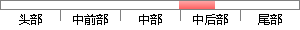

本次毕业设计选择了当前技术体系相对成熟的微信小程序作为开发平台，涉及到的技术有类XML标记语言、CSS渲染、JavaScript以及简单的后台通信实现。
片段位置图

相似结果|
1
原句片段：XML标记语言、CSS渲染、JavaScript以及简单的后台通信实现。
相似片段 1：今天先不说JavaScript,那么就是静态页面的实现,html+...HTML与XML同为标记语言。标记语言,是一种将文本以及...然后再加上CSS渲染,应该也是可以展示在网页上的。 ...
|
※ 片段修改建议 ※
近似词参考：- 技术：手艺 技能
- 体系：系统
- 相对：相对于
- 程序：法式 步伐
- 开发：开辟
- 技术：手艺 技能
- 标记：标识表记标帜 标志 符号
- 语言：说话
- 渲染：衬着
- 以及：和
- 简单：简略 简朴
- 后台：背景
- 通信：通讯
系统自动生成语句：本次毕业设计选择了当前手艺系统相对于成熟的微信小法式作为开辟平台，涉及到的手艺有类XML标识表记标帜说话、CSS衬着、JavaScript和简略的背景通讯实现。
注：本片段修改建议为系统自动生成，仅供参考。